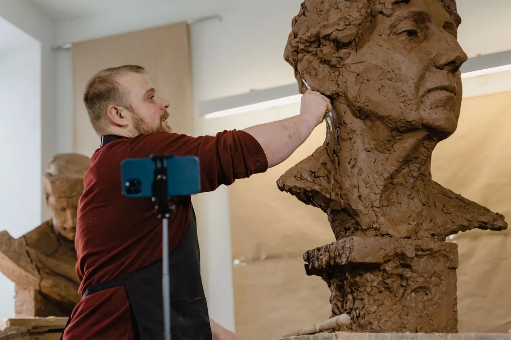
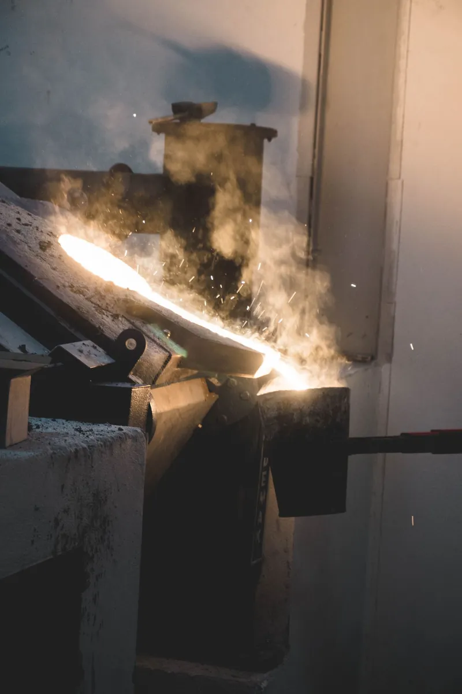
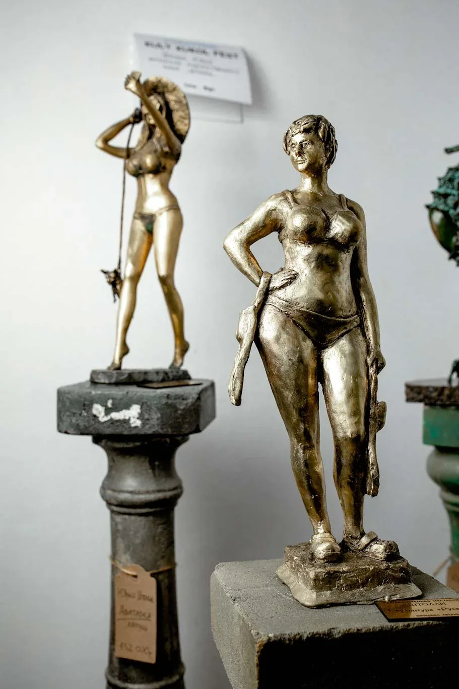
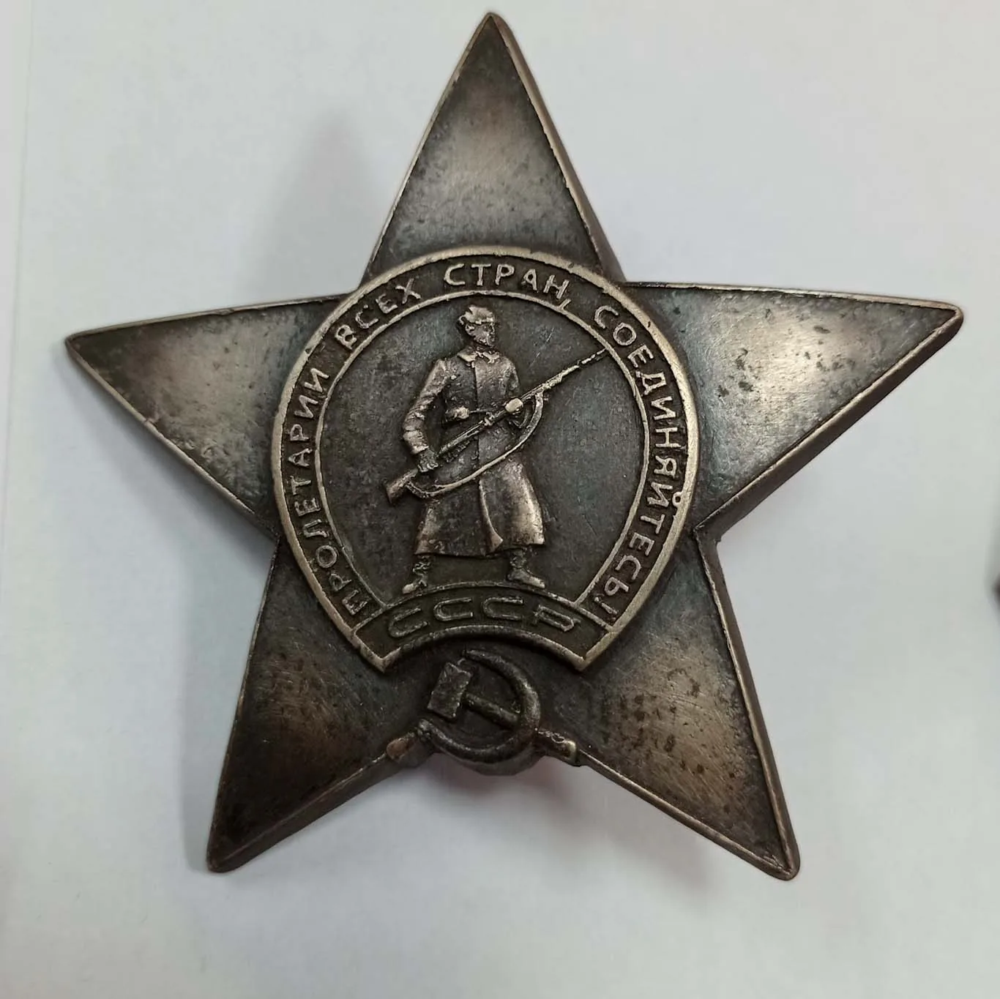

Бронзовое литьё — одно из древнейших ремёсел человечества. И всё же каждый раз, когда расплавленный металл заливают в форму, происходит что-то магическое: спустя несколько часов рождается предмет, способный пережить века. В этой статье мы шаг за шагом расскажем, как создаётся бронзовая скульптура в нашей мастерской.
Идея
Техническое задание, размеры, материал, бюджет.
3D-модель
Цифровой эскиз и согласование с заказчиком.
Форма
Мастер-модель и литьевая форма.
Литьё
Плавка металла и заливка в форму.
Доработка
Чеканка, шлифовка, прочистка деталей.
Патина
Цвет, фактура и защитное покрытие.
Этап 1. Идея и техническое задание
Всё начинается с разговора. Заказчик рассказывает, что хочет получить: портретный бюст, декоративный элемент интерьера, памятная табличка или монументальная скульптура. Мы задаём уточняющие вопросы: размеры, материал, контекст установки, бюджет.
Если у заказчика есть эскиз или фотографии — отлично. Если нет — разрабатываем концепцию совместно. Этот этап определяет всё дальнейшее: правильное техническое задание в разы снижает количество правок на следующих стадиях.
Этап 2. Скульптурный эскиз и 3D-модель
Мы работаем с современными инструментами: прежде чем лепить физическую форму, создаём цифровую 3D-модель в специализированном ПО. Это позволяет:
- показать заказчику готовый результат до начала литья;
- быстро вносить правки (менять пропорции, детализацию, угол);
- точно рассчитать вес и объём будущей отливки;
- получить чёткий шаблон для ручной доработки формы.
Для портретных работ критически важно портретное сходство — мы работаем с несколькими фотографиями под разными углами, иногда проводим сеанс с живой натурой.

Рука мастера и цифра
3D-модель задаёт точные пропорции, но характер работе придаёт ручная лепка. Мастер дорабатывает фактуру, мимику, тончайшие детали — то, что невозможно передать одной только цифрой.
Именно сочетание технологий и ручного труда отличает авторскую скульптуру от штамповки.
Этап 3. Изготовление формы
После утверждения 3D-модели изготавливаем мастер-модель — прообраз будущей скульптуры. Её создают вручную из пластилина, глины или полимерной массы по заранее распечатанным шаблонам. Затем с мастер-модели снимают силиконовую или составную литьевую форму.
Качество формы — главный секрет качества отливки. Мельчайшая царапина на форме превратится в дефект на металле.
Для крупных скульптур форму делают составной: 4–12 частей, которые потом собирают вместе.
Этап 4. Плавка и заливка металла
Бронза плавится при температуре около 950–1050 °C. В тигельной печи расплавляем сплав (медь + олово, иногда с добавками цинка или свинца для особых свойств), тщательно следим за температурой и составом. Перегрев ухудшает структуру металла, недогрев даёт незаполненные полости.

температура плавки бронзы. За ней следят непрерывно: перегрев портит структуру металла, недогрев оставляет незаполненные полости в форме.
Расплавленный металл заливают в форму плавным, контролируемым движением. Через несколько часов форму раскрывают и извлекают первичную отливку — пока ещё с литниками, заусенцами и следами от швов формы.
Этап 5. Механическая доработка
Черновую отливку обрабатывают вручную: срезают литники, шлифуют швы, прочеканивают детали. Именно здесь скульптор дорабатывает фактуру, которую не может передать форма: штрихи волос, морщины, тонкие орнаменты.


Этап 6. Патинирование и финишная обработка
Последний этап — придание скульптуре нужного цвета и фактуры поверхности. Бронза патинируется химическими составами: тёмно-коричневый, чёрный, зелёный, золотистый оттенки. После патинирования поверхность покрывают воском или лаком для защиты от внешней среды.
Подробнее о патинировании читайте в нашей отдельной статье о патине.
Сроки и стоимость
Средний срок изготовления бронзовой скульптуры среднего размера — от 4 до 8 недель. Стоимость зависит от веса отливки, сложности формы и объёма ручной работы. Художественное литьё из бронзы начинается от 4 000 ₽ за кг металла.
Готовы обсудить вашу идею?
Расскажите нам о проекте — ответим в течение дня, предложим варианты и стоимость.
Написать в Telegram →